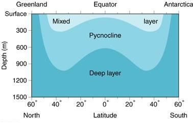
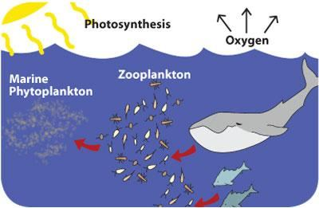
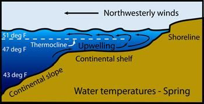
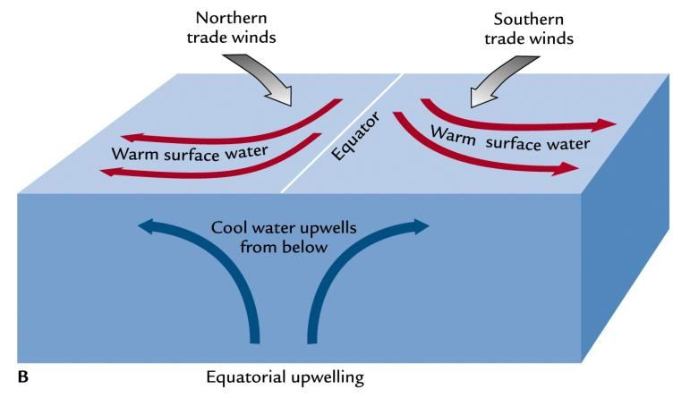

The verses then say, "Then We draw it in towards Ourselves; a contraction by easy stages." The Milky Way galaxy is rotating and gradually devouring its spiral arms, indicating that the galaxy is contracting in stages. As a result, the Sun is being drawn toward the central super- massive black hole of the galaxy. But why do the verses say that the Sun is drawn toward Ourselves? The super-massive black hole at the center of the Milky Way galaxy is a point of extreme gravitational force. This gravitational force can be seen as an extended elementary soul (ruh) of Allah. This may be why the verses say, "Then We draw it in towards Ourselves." This part of the verse may also refer to the overall evolution of the universe. The universe is heading towards Doomsday, when it will be returned to God in the form of the Big Crunch, for Resurrection, Judgment, and Revival.
আয়াতগুলো তখন বলে, "অতঃপর আমরা এটাকে নিজের দিকে টেনে নিই; সহজ ধাপে সংকোচন।" মিল্কিওয়ে গ্যালাক্সি ঘূর্ণায়মান এবং ধীরে ধীরে তার সর্পিল বাহুগুলিকে গ্রাস করছে, যা নির্দেশ করে যে ছায়াপথটি পর্যায়ক্রমে সংকুচিত হচ্ছে। ফলস্বরূপ, সূর্য গ্যালাক্সির কেন্দ্রীয় সুপার-ম্যাসিভ ব্ল্যাক হোলের দিকে টানা হচ্ছে। কিন্তু কেন আয়াত বলে যে সূর্য নিজেদের দিকে টানা হয়? মিল্কিওয়ে গ্যালাক্সির কেন্দ্রে সুপার-ম্যাসিভ ব্ল্যাক হোল চরম মাধ্যাকর্ষণ শক্তির একটি বিন্দু। এই মাধ্যাকর্ষণ শক্তিকে আল্লাহর একটি বর্ধিত প্রাথমিক আত্মা (রুহ) হিসাবে দেখা যেতে পারে। এই কারণেই আয়াতে বলা হতে পারে, "তারপর আমরা এটিকে নিজেদের দিকে টেনে নিই।" আয়াতের এই অংশটি মহাবিশ্বের সামগ্রিক বিবর্তনকেও নির্দেশ করতে পারে। মহাবিশ্ব কেয়ামতের দিকে যাচ্ছে, যখন এটি পুনরুত্থান, বিচার এবং পুনরুজ্জীবনের জন্য বিগ ক্রাঞ্চ আকারে ঈশ্বরের কাছে ফিরে আসবে।
And He it is Who sends the winds as heralds of glad tidings going before His mercy, and We send down pure water from the sky that with it We may give life to a dead land and slake the thirst of things We have created, cattle and men in great numbers. And We have distributed the (water) amongst them in order that they may celebrate praises, but most men are averse, but ingratitude! Had it been Our will, We could have sent a Warner to every center of population. Therefore, listen not to the Unbelievers, but strive against them with the utmost strenuousness, with the (Quran). It is He Who has let free the two bodies of flowing water, one weighed down Euphrates and the other salt and bitter; and He has made a barrier between them—a partition that is forbidden to be passed.
আর তিনিই তাঁর রহমতের পূর্বে সুসংবাদের বার্তাবাহক হিসাবে বাতাস প্রেরণ করেন এবং আমরা আকাশ থেকে বিশুদ্ধ পানি বর্ষণ করি যাতে আমরা একটি মৃত ভূমিকে জীবিত করতে পারি এবং আমাদের সৃষ্টি করা জিনিসের তৃষ্ণা মেটাতে পারি, গবাদিপশু ও মানুষ প্রচুর পরিমাণে। এবং আমি তাদের মধ্যে (পানি) বণ্টন করেছি যাতে তারা প্রশংসা করতে পারে, কিন্তু অধিকাংশ লোকই অপছন্দ করে, কিন্তু অকৃতজ্ঞ। আমাদের ইচ্ছা থাকলে আমরা জনসংখ্যার প্রতিটি কেন্দ্রে একজন সতর্ককারী পাঠাতে পারতাম। অতএব, কাফেরদের কথা শুনবেন না, বরং (কুরআন) দিয়ে তাদের বিরুদ্ধে কঠোর সংগ্রাম করুন। তিনিই প্রবাহিত জলের দুটি দেহকে মুক্ত করেছেন, একটি ইউফ্রেটিস এবং অন্যটি লবণ এবং তিক্ত; এবং তিনি তাদের মধ্যে একটি বাধা তৈরি করেছেন - একটি বিভাজন যা অতিক্রম করা নিষিদ্ধ।
The first paragraph of the verses under discussion describes the watering of land creatures, and the last paragraph describes the watering of sea creatures. How middle paragraph fits here is discussed below. I will start by explaining the last paragraph first: The water on the southern side of the Caspian Sea is salty, while the water on the northern side is fresh, due to the influx of water from the Volga River. Water does not mix easily; many rivers flow far into the sea, maintaining the lower salinity of the water, as if the rivers were flowing through the surface of the sea. The river water gradually mixes with the seawater, reducing the salinity of the surface water. Rainfall also contributes to lowering the salinity. As a result, the surface water becomes more suitable for the growth of plankton. The surface water is expressed in above verses as ―weighed down Euphrates‖. It means that the water is not as fresh as the water of Euphrates, and it is not as salty as deep-sea water. Here comes the barrier: and He has made a barrier between them—a partition that is forbidden to be passed. The barrier is called ―Pycnocline‖. The Pycnocline is a layer within 100 meter to 1000 meter, which is marked by rapid increase of density in relation to depth. Formation of Pycnocline may result from the combined effect of temperature and salinity.
আলোচ্য আয়াতের প্রথম অনুচ্ছেদে স্থল প্রাণীদের জল দেওয়ার কথা বলা হয়েছে এবং শেষ অনুচ্ছেদে সমুদ্রের প্রাণীদের জল দেওয়ার কথা বলা হয়েছে৷ মধ্যবর্তী অনুচ্ছেদটি এখানে কীভাবে ফিট করে তা নীচে আলোচনা করা হয়েছে। আমি প্রথমে শেষ অনুচ্ছেদটি ব্যাখ্যা করে শুরু করব: ক্যাস্পিয়ান সাগরের দক্ষিণ দিকের জল লবণাক্ত, অন্যদিকে ভলগা নদীর জলের প্রবাহের কারণে উত্তর দিকের জল তাজা। জল সহজে মিশে না; অনেক নদী সমুদ্রে প্রবাহিত হয়, পানির নিম্ন লবণাক্ততা বজায় রাখে, যেন নদীগুলো সমুদ্রের উপর দিয়ে প্রবাহিত হচ্ছে। নদীর পানি ধীরে ধীরে সমুদ্রের পানিতে মিশে যায়, ভূপৃষ্ঠের পানির লবণাক্ততা হ্রাস করে। বৃষ্টিপাত লবণাক্ততা কমাতেও ভূমিকা রাখে। ফলস্বরূপ, প্ল্যাঙ্কটনের বৃদ্ধির জন্য পৃষ্ঠের জল আরও উপযুক্ত হয়ে ওঠে। উপরের আয়াতে ভূ-পৃষ্ঠের জলকে "ভারত ইউফ্রেটিস" হিসাবে প্রকাশ করা হয়েছে। এর অর্থ এই যে জলটি ফোরাতের জলের মতো তাজা নয় এবং এটি গভীর সমুদ্রের জলের মতো নোনতা নয়। এখানে বাধা আসে: এবং তিনি তাদের মধ্যে একটি বাধা তৈরি করেছেন - একটি বিভাজন যা অতিক্রম করা নিষিদ্ধ। বাধাটিকে "পাইকনোক্লাইন" বলা হয়। Pycnocline হল 100 মিটার থেকে 1000 মিটারের মধ্যে একটি স্তর, যা গভীরতার সাথে ঘনত্বের দ্রুত বৃদ্ধি দ্বারা চিহ্নিত করা হয়। তাপমাত্রা এবং লবণাক্ততার সম্মিলিত প্রভাব থেকে Pycnocline গঠন হতে পারে।
FIGURE 25.5: Pycnocline The Pycnocline is extremely stable and acts as a barrier that protects the surface water (upper 100 meter, approximately) by resisting the Vertical Flow. Thus, changes in salinity and temperature are very small below Pycnocline but are seasonal in surface waters. The Pycnocline is absent in the Polar Regions. This separation has great importance for marine life. Sweet water of the rivers and rain spread throughout the surface of the sea and makes it a Mixed Layer with less salinity. Sunlight keeps it amply hot. Thus, the upper layer is suitable for growing different kinds of phytoplankton.

চিত্র 25_5 / Figure 25_5
চিত্র 25.5: Pycnocline Pycnocline অত্যন্ত স্থিতিশীল এবং একটি বাধা হিসাবে কাজ করে যা উল্লম্ব প্রবাহকে প্রতিহত করে পৃষ্ঠের জল (উপরের 100 মিটার, প্রায়) রক্ষা করে। এইভাবে, লবণাক্ততা এবং তাপমাত্রার পরিবর্তনগুলি Pycnocline-এর নীচে খুব কম কিন্তু ভূপৃষ্ঠের জলে মৌসুমী। পাইকনোক্লাইন মেরু অঞ্চলে অনুপস্থিত। এই বিচ্ছেদ সামুদ্রিক জীবনের জন্য অত্যন্ত গুরুত্বপূর্ণ। নদীগুলির মিষ্টি জল এবং বৃষ্টি সমুদ্রের পৃষ্ঠ জুড়ে ছড়িয়ে পড়ে এবং এটিকে কম লবণাক্ততা সহ একটি মিশ্র স্তরে পরিণত করে। সূর্যের আলো এটিকে যথেষ্ট গরম রাখে। সুতরাং, উপরের স্তরটি বিভিন্ন ধরণের ফাইটোপ্ল্যাঙ্কটন জন্মানোর জন্য উপযুক্ত।
চিত্র 25_5 / Figure 25_5
FIGURE 25.6: Marine Food Cycle

চিত্র 25_6 / Figure 25_6
চিত্র 25.6: সামুদ্রিক খাদ্য চক্র
চিত্র 25_6 / Figure 25_6
Most phytoplankton are too small to be seen by naked eye. However, when present in high enough numbers, they appear as a green discoloration of the water due to the presence of chlorophyll within their cells. They are important part of marine food cycle: phytoplankton – zooplankton – small fish – big fish. The Food Cycle needs decomposers, which grow below the Pycnocline. The layer below Pycnocline is suitable for microorganisms, such as bacteria, protozoa, algae, fungi, etc. They are crucial to nutrient recycling in the eco-systems. Some are a vital part of the nitrogen cycle. The creatures that die, such as fishes, fall on the ocean floor. The creatures of the sea-bed then decompose the dead creatures. The verses under discussion are talking about the Pycnocline as the Barrier. It is also clear in the following verses:
বেশিরভাগ ফাইটোপ্ল্যাঙ্কটন খালি চোখে দেখা যায় না এমন খুব ছোট। যাইহোক, যখন যথেষ্ট পরিমাণে উপস্থিত থাকে, তখন তাদের কোষের মধ্যে ক্লোরোফিলের উপস্থিতির কারণে তারা জলের সবুজ বিবর্ণতা হিসাবে উপস্থিত হয়। এগুলি সামুদ্রিক খাদ্য চক্রের গুরুত্বপূর্ণ অংশ: ফাইটোপ্ল্যাঙ্কটন - জুপ্ল্যাঙ্কটন - ছোট মাছ - বড় মাছ। খাদ্য চক্রের জন্য পচনশীল যন্ত্রের প্রয়োজন, যা পাইকনোক্লাইনের নীচে বৃদ্ধি পায়। Pycnocline এর নিচের স্তরটি ব্যাকটেরিয়া, প্রোটোজোয়া, শৈবাল, ছত্রাক ইত্যাদির মতো অণুজীবের জন্য উপযুক্ত। ইকো-সিস্টেমে পুষ্টির পুনর্ব্যবহার করার জন্য এগুলি অত্যন্ত গুরুত্বপূর্ণ। কিছু নাইট্রোজেন চক্রের একটি গুরুত্বপূর্ণ অংশ। যেসব প্রাণী মারা যায়, যেমন মাছ, সমুদ্রের তলদেশে পড়ে। সমুদ্রতটের প্রাণীরা তখন মৃত প্রাণীদের পচন ধরে। আলোচনার অধীন আয়াতগুলি বাধা হিসাবে Pycnocline সম্পর্কে কথা বলছে। নিম্নোক্ত আয়াতগুলোতেও তা স্পষ্ট:
―He has let free the two bodies of flowing water, meeting together. Between them is a Barrier (Pycnocline), which they do not transgress. Then which of the favours of your Lord will ye deny? Out of them come Pearls and Coral. Then which of the favours of your Lord will ye deny?‖ [Al Quran 55: 19-23]
-তিনি মুক্ত করেছেন দুই দেহ প্রবাহিত জলে, মিলিত হতে। তাদের মাঝখানে একটি বাধা (Pycnocline), যা তারা লঙ্ঘন করে না। তাহলে তোমরা তোমাদের পালনকর্তার কোন কোন অনুগ্রহকে অস্বীকার করবে? এর মধ্যে থেকে আসে মুক্তা ও প্রবাল। তাহলে তোমরা তোমাদের পালনকর্তার কোন কোন অনুগ্রহকে অস্বীকার করবে?'' [আল কুরআন ৫৫:১৯-২৩]
The creatures of these two layers remain separated and grow. But the layers need regulation. The vertical mixing across Pycnocline, which occurs due to turbulence, regulates the layers. The nutrient-rich up- welled water stimulates the growth and reproduction of phytoplankton; it transports salt as well. Winds blowing across the ocean surface push the water away. Water then rises up from beneath the surface to replace the water that was pushed away. This process is known as ―upwelling.‖ Upwelling occurs in the open ocean and along coastlines. The Pycnocline Diffusion controls the upwelling. FIGURE 25.7: Upwelling in the coast line due to Wind

চিত্র 25_7 / Figure 25_7
এই দুই স্তরের প্রাণীরা আলাদা থাকে এবং বেড়ে ওঠে। কিন্তু স্তরগুলির নিয়ন্ত্রণ প্রয়োজন। Pycnocline জুড়ে উল্লম্ব মিশ্রণ, যা অশান্তির কারণে ঘটে, স্তরগুলিকে নিয়ন্ত্রণ করে। পুষ্টিসমৃদ্ধ উচ্ছলিত পানি ফাইটোপ্ল্যাঙ্কটনের বৃদ্ধি ও প্রজননকে উদ্দীপিত করে; এটি লবণও পরিবহন করে। সমুদ্রপৃষ্ঠ জুড়ে প্রবাহিত বাতাস জলকে দূরে ঠেলে দেয়। জল তখন ভূপৃষ্ঠের নিচ থেকে উপরে উঠে যায় যা জলকে দূরে ঠেলে প্রতিস্থাপন করে। এই প্রক্রিয়াটি "উচ্চপ্রবাহ" নামে পরিচিত। পাইকনোক্লাইন ডিফিউশন উর্ধ্বগতি নিয়ন্ত্রণ করে। চিত্র 25.7: বাতাসের কারণে উপকূলরেখায় ঊর্ধ্বগতি
চিত্র 25_7 / Figure 25_7
The vertical mixing (upwelling) occurs due to oceanic eddies as well. The discrete parcels of water break off from the oceanic current as eddies, which may be up to about 200 kilometers across and last for many months. They drift across ocean basins at speeds of about 4.3 kilometers per day. [In comparison, atmospheric eddies (tropical cyclones) are about 2,000 kilometers across and move faster (up to 30 kilometers per hour)]. Vertical mixing occurs only in certain areas along the eastern boundaries of oceans and along the equator. It also happens in the Arctic and Antarctic regions, where the freezing of water during winter produces extremely salty water, causing the dense salty water to sink. FIGURE 25.8: Upwelling along Equator

চিত্র 25_8 / Figure 25_8
উল্লম্ব মিশ্রন (উর্ধ্বমুখী) সামুদ্রিক এডিজের কারণেও ঘটে। জলের বিচ্ছিন্ন পার্সেলগুলি এডি হিসাবে সমুদ্রের স্রোত থেকে বিচ্ছিন্ন হয়ে যায়, যা প্রায় 200 কিলোমিটার পর্যন্ত হতে পারে এবং অনেক মাস ধরে চলতে পারে। তারা প্রতিদিন প্রায় 4.3 কিলোমিটার গতিতে সমুদ্রের অববাহিকা জুড়ে প্রবাহিত হয়। [তুলনাতে, বায়ুমণ্ডলীয় এডিস (ক্রান্তীয় ঘূর্ণিঝড়) প্রায় 2,000 কিলোমিটার জুড়ে এবং দ্রুত গতিতে চলে (ঘণ্টায় 30 কিলোমিটার পর্যন্ত)]। উল্লম্ব মিশ্রণ শুধুমাত্র সমুদ্রের পূর্ব সীমানা এবং বিষুবরেখা বরাবর নির্দিষ্ট কিছু এলাকায় ঘটে। এটি আর্কটিক এবং অ্যান্টার্কটিক অঞ্চলেও ঘটে, যেখানে শীতকালে পানি জমাট বাঁধার ফলে অত্যন্ত নোনতা পানি উৎপন্ন হয়, যার ফলে ঘন লবণাক্ত পানি ডুবে যায়। চিত্র 25.8: বিষুবরেখা বরাবর উর্ধ্বমুখী
চিত্র 25_8 / Figure 25_8
Finally, the first paragraph of the verses under discussion describes the watering of land creatures, and the last paragraph describes the watering of sea creatures. How does the middle paragraph fit here? The following is the answer: The nutrients and salt rise to the surface through a few upwelling regions and spread throughout the ocean. Similarly, Allah‘s message will be spread through Prophet Muhammad (pbuh) alone; Allah will not send Messengers to every center of population. Thus, the Lord of the Pycnocline says in the middle paragraph: ―Had it been Our will, We could have sent a Warner to every center of population. Therefore, listen not to the Unbelievers, but strive against them with the utmost strenuousness, with the (Quran)‖ Therefore, there is one Prophet for the entire modern world, so strive diligently to ensure that his message reaches everyone.
সবশেষে, আলোচ্য আয়াতের প্রথম অনুচ্ছেদে স্থল প্রাণীদের জল দেওয়ার কথা বলা হয়েছে এবং শেষ অনুচ্ছেদে সমুদ্রের প্রাণীদের জল দেওয়ার কথা বলা হয়েছে। মাঝামাঝি অনুচ্ছেদ এখানে কিভাবে ফিট করে? নিম্নোক্ত উত্তরটি হল: পুষ্টি এবং লবণ কয়েকটি উর্ধ্বমুখী অঞ্চলের মাধ্যমে পৃষ্ঠে উঠে এবং সমগ্র মহাসাগরে ছড়িয়ে পড়ে। একইভাবে, আল্লাহর বাণী প্রচার হবে একমাত্র নবী মুহাম্মদ (সা.)-এর মাধ্যমে; আল্লাহ জনসংখ্যার প্রতিটি কেন্দ্রে রাসূল পাঠাবেন না। সুতরাং, পিকনোক্লাইনের লর্ড মাঝখানের অনুচ্ছেদে বলেছেন: “আমাদের ইচ্ছা থাকলে আমরা জনসংখ্যার প্রতিটি কেন্দ্রে একজন সতর্ককারী পাঠাতে পারতাম। অতএব, অবিশ্বাসীদের কথা শুনবেন না, বরং (কুরআন) দিয়ে তাদের বিরুদ্ধে সর্বোচ্চ দৃঢ়তার সাথে সংগ্রাম করুন” অতএব, সমগ্র আধুনিক বিশ্বের জন্য একজন নবী আছেন, তাই তার বাণী সবার কাছে পৌঁছে দেওয়ার জন্য আন্তরিকভাবে চেষ্টা করুন।
It is He Who has created man from water. Then has He established relationships of lineage and marriage; for thy Lord has power. Yet do they worship besides God things that can neither profit them nor harm them. And the Misbeliever is a helper against his own Lord! But thee We only sent to give glad tidings and admonition. Say: "No reward do I ask of you for it, but this that each one who will may take a Path to his Lord." And put thy trust in Him Who lives and dies not and celebrate his praise; and enough is He to be acquainted with the faults of His servants. He Who created the Skies and Lands and all that is between in six days and is firmly established on the Arsh; God Most Gracious—ask thou then about Him of any acquainted. When it is said to them, "Adore ye Most Gracious", they say: "And what is Most Gracious? Shall we adore that which thou command us?" And it increases their flight. Blessed is He Who made Fortresses in the Skies and placed therein a Lamp and a Moon giving light. And it is He Who made the Night and the Day to follow each other for such as have the will to celebrate His praises or to show their gratitude. And the servants of the Most Gracious are: Those who walk on the earth in humility, and when the ignorant address them they say, "Peace!"; those who spend the night in adoration of their Lord prostrating and standing; those who say, ―Our Lord, avert from us the Wrath of Hell,‖ for its wrath is indeed an affliction grievous—evil indeed is it as an abode and as a place to rest in. Those who when they spend are not extravagant and not niggardly but hold a just (balance) between those; those who invoke not with God any other god, nor slay such life as God has made sacred except for just cause, nor commit fornication, and any that does this meets punishment—the Penalty on the Day of Judgment will be doubled to him, and he will dwell therein in ignominy unless he repents, believes, and works righteous deeds; for God will change the evil of such persons into good, and God is Oft-Forgiving, Most Merciful. And whoever repents and does good has truly turned to God with a conversion. Those who witness no falsehood, and if they pass by futility, they pass by it with honorable (avoidance); those who when they are admonished with the verses of their Lord droop not down at them as if they were deaf or blind, and those who pray, "Our Lord, grant unto us wives and offspring who will be the comfort of our eyes, and make us for the Guards a leader,‖ Those are the ones who will be rewarded with the highest place in Jannaat because of their patient constancy. Therein shall they be met with salutations and peace, dwelling therein, how beautiful an abode and place of rest! Say: "My Lord is not uneasy because of you if you call not on Him—but you have indeed rejected, and soon will come the inevitable!"
তিনিই মানুষকে পানি থেকে সৃষ্টি করেছেন। তারপর তিনি বংশ ও বিবাহের সম্পর্ক স্থাপন করেছেন; তোমার প্রভুর ক্ষমতা আছে। অথচ তারা আল্লাহকে বাদ দিয়ে এমন কিছুর ইবাদত করে যা তাদের উপকার করতে পারে না এবং ক্ষতিও করতে পারে না। আর কাফের তার নিজের পালনকর্তার বিরুদ্ধে সাহায্যকারী! কিন্তু আমি তোমাকে শুধু সুসংবাদ ও উপদেশ দিতেই প্রেরণ করেছি। বলুন, আমি তোমাদের কাছে এর জন্য কোন প্রতিদান চাই না, তবে এই যে, যে কেউ তার পালনকর্তার পথ অবলম্বন করতে পারে। এবং তাঁর উপর ভরসা রাখুন যিনি জীবিত আছেন এবং মৃত্যুবরণ করেন না এবং তাঁর প্রশংসা করুন। এবং তিনি তাঁর বান্দাদের দোষ-ত্রুটি সম্পর্কে অবহিত হওয়ার জন্য যথেষ্ট। যিনি আকাশ ও ভূমি এবং এর মধ্যবর্তী সবকিছু ছয় দিনে সৃষ্টি করেছেন এবং তিনি আরশে দৃঢ়ভাবে প্রতিষ্ঠিত আছেন; পরম করুণাময় ঈশ্বর-তাহলে তার সম্পর্কে কোন পরিচিত কাউকে জিজ্ঞেস করুন। যখন তাদের বলা হয়, "তোমরা পরম করুণাময়কে উপাসনা কর", তখন তারা বলে, "এবং পরম করুণাময় কি? আপনি আমাদেরকে যা আদেশ করেন, আমরা কি তার ইবাদত করব?" এবং এটি তাদের ফ্লাইট বৃদ্ধি করে। বরকতময় তিনি যিনি আকাশে দুর্গ তৈরি করেছেন এবং তাতে রেখেছেন প্রদীপ ও আলোক চন্দ্র। আর তিনিই সেই ব্যক্তি যিনি রাত ও দিনকে একে অপরের অনুসরণ করার জন্য তৈরি করেছেন যারা তাঁর প্রশংসা বা কৃতজ্ঞতা প্রকাশ করার ইচ্ছা রাখে। আর পরম করুণাময়ের বান্দারা হল: যারা পৃথিবীতে নম্রভাবে চলাফেরা করে এবং অজ্ঞরা যখন তাদের সম্বোধন করে তখন তারা বলে, ‘সালাম’; যারা তাদের পালনকর্তার উদ্দেশ্যে সিজদা ও দাঁড়িয়ে রাত কাটায়। যারা বলে, 'হে আমাদের প্রভু, আমাদের থেকে জাহান্নামের ক্রোধ দূর করুন', কারণ এর ক্রোধ নিঃসন্দেহে একটি যন্ত্রণাদায়ক - নিঃসন্দেহে এটি একটি আবাস এবং বিশ্রামের স্থান হিসাবে মন্দ। যারা আল্লাহর সাথে অন্য কোন উপাস্যকে ডাকে না, ন্যায়সঙ্গত কারণ ব্যতীত এমন জীবনকে হত্যা করে না যা ঈশ্বর পবিত্র করেছেন, বা ব্যভিচার করে না, এবং যে কেউ এই শাস্তির মুখোমুখি হয় - বিচারের দিন তার জন্য শাস্তি দ্বিগুণ করা হবে এবং সে সেখানে অপমানিত হবে যদি না সে তওবা করে, বিশ্বাস করে এবং সঠিক কাজ না করে; কেননা আল্লাহ তাদের মন্দকে কল্যাণে পরিবর্তন করবেন এবং আল্লাহ ক্ষমাশীল, পরম দয়ালু। এবং যে কেউ অনুতপ্ত হয় এবং ভাল কাজ করে সে সত্যই ধর্মান্তরিত হয়ে ঈশ্বরের দিকে ফিরে গেছে। যারা কোন মিথ্যার সাক্ষ্য দেয় না এবং যদি তারা অসারতা দিয়ে যায়, তারা সম্মানের সাথে (এড়িয়ে চলে)। যাদেরকে তাদের রবের আয়াত দ্বারা উপদেশ দেওয়া হয় তখন তাদের দিকে নত হয় না যেন তারা বধির বা অন্ধ এবং যারা প্রার্থনা করে, "হে আমাদের পালনকর্তা, আমাদেরকে এমন স্ত্রী ও সন্তান দান করুন যারা আমাদের চোখের প্রশান্তি হবে এবং আমাদেরকে রক্ষকদের জন্য নেতা করুন" তারাই তারা যারা জান্নাতে তাদের ধৈর্য্যের সর্বোচ্চ স্থান লাভ করবে কারণ তারা জান্নাতের সর্বোচ্চ স্থান পাবে। এবং শান্তি, সেখানে বাস, কত সুন্দর আবাস এবং বিশ্রামের জায়গা বলুন: "আমার পালনকর্তা তোমাদের জন্য অস্বস্তি হয় না যদি আপনি তাকে না ডাকেন - কিন্তু আপনি সত্যই প্রত্যাখ্যান করেছেন এবং শীঘ্রই অনিবার্য আসবে!"